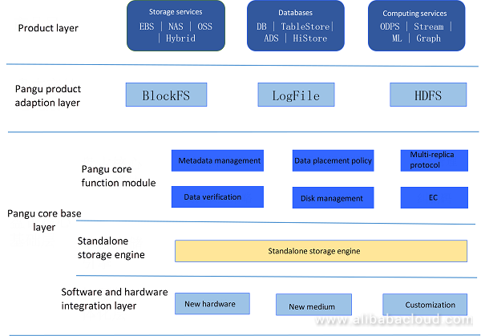
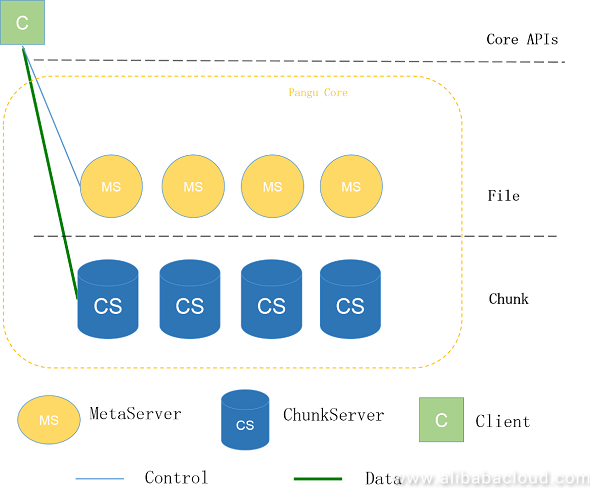

分布式存储系统介绍
目录
1 GFS
2 HDFS
3 WAS
4 Pangu
4.1 Pangu中文翻译 By yonggang.yyg(永刚)
盘古是阿里云开发的分布式文件系统，本文讨论盘古的核心特性和优势，以及盘古如何 自证是最佳的云存储系统。
盘古是阿里云开发的高可靠、高可用、高性能的分布式文件系统。有接近10年的历史。做为 阿里云统一存储的核心，盘古1.0可靠且有效地支持了阿里云多条业务线的快速发展，其中 包括ECS，NAS，OSS，TableStore，MaxCompute，以及AnalyticDB。近几年阿里云重新设计 实现了第二代存储引擎盘古2.0。盘古2.0同时为阿里云、阿里集团和蚂蚁金服提供了更好的 存储服务。盘古2.0的升级主要是基于两个原因：硬件升级和业务要求。
4.1.1 底层硬件的快速发展
最近数年，分布式存储相关硬件的性能显著改善。
存储介质从HDD演进到SATA SSD和NVMe SSD，相比磁介质，SSD介质的IOPS有两个数量级的 提升。同样，延时也有两个数量级的降低。4KB顺序写性能减少到7微秒，内存接口的Optane 内存延时可能进入纳秒时代。此外，网络也在快速发展，从GE到10GE，25GE，40GE，50GE， 甚至100GE。一跳网络只需要5微秒。
底层硬件的快速发展，给盘古带来了机遇和一些挑战。为了保持行业领先，盘古必须充分 利用这些硬件。
4.1.2 上层业务压力
连接到盘古的业务在持续增加。然而，每个业务对存储都有自己不同的需求，恰当的支持 这些业务正在成为盘古的压力。
首先，存储和计算分离是阿里云的战略，需要一个存储集群为多个计算集群提供存储服务。 这对存储集群提出了更高的性能要求。使用尽量少的存储集群服务尽可能多的计算集群，是 盘古未来的目标。
其次，存储和计算分离后，期望计算集群使用相同的存储命名空间，以达成存储集群内部 架构和控制对用户透明的目的。在盘古1.0里已支持数据节点的自动伸缩，但元数据节点 依然依赖具备更好配置的特定的机型，这些机型限制了文件系统内节点和文件的数量。 另外，中心式元数据服务是系统中最脆弱的组件，部分元数据服务器宕机可能导致存储集群 失效。
第三，不同的业务要求不同类型的访问模式。访问范围扩展时，需要维持复杂开放接口的 兼容性。支持HDFS访问的需求在上升，同时许多应用提出了支持POSIX访问的需求。
最后，市场竞争在变得更加激烈。做为阿里巴巴集团的统一存储平台，盘古必须借助技术 降低成本，为商业赢得主动权。
为满足上述的需求，盘古必须在各维度建立新的具体目标，在架构设计和工程实践上赢得 突破。
4.1.3 设计目标
为u应对上述新的发展趋势和挑战，盘古2.0树立了如下核心设计目标：
- 卓越的性能：进行架构设计和工程优化，满足下一代网络、存储软件、存储硬件，获取 软件和硬件技术开发的红利；分布式文件系统同时提供高性能、高吞吐、低延时。
- 分布式元数据管理：元数据完整的分布式管理，支持动态分裂，迁移，极大的提高文件 数量，解决元数据特定机型依赖，减小故障"爆炸半径"，改善系统稳定性。
- 系统弹性：支持多种产品形式的访问，共享统一的核心路径，支撑更多业务，减少不同 业务访问方式带来的架构调整。统一硬件访问接口，支持当前硬件和将来的硬件优化。
- 成本优化：利用分层，EC，压缩，重删技术，节省存储成本，在激烈的商业竞争中赢得 主动，通过技术优势应对指数级的数据增长。
4.1.4 盘古2.0架构
为实现上述目标，盘古采用分层架构： 
软硬件结合层在最底部，负责与硬件交互，并能独立地快速引入新的硬件和存储介质。基于 软件和硬件结合层提供的标准服务，以及存储业务逻辑，每个存储服务器作为单独的存储 引擎工作，提供数据的持久化。上层元数据层，负责元数据管理，数据放置，一致性， 可靠性。另外，客户端、元数据管理层和独立的存储引擎协作，完成更加复杂的功能，例如 多副本协议和EC。
大量业务使用盘古作为底层存储。为适应不同的产品，并最大化利用其能力，基于业务 特性，盘古提供多个产品适配层。例如，为更好的支持块存储业务，盘古交付BlockFS 访问层，以及对应的ESSD云盘产品。ESSD提供100万IOPS/4KB的极端性能，达到了双25GE 网卡的最大带宽。
盘古提供LogFile层适配OSS，TableStore和数据库，这些服务通过LogStream或类似方式 访问盘古。盘古还提供HDFS兼容层，用来连接开源生态，使Hadoop社区无感知的使用盘古。 适配层桥接产品和盘古核心层，帮助业务快速有效使用盘古服务，享受高性能、高可用的 分布式存储。
4.1.5 核心基础
盘古核心包括Client，MetaServer和ChunkServer。 
如上图，MetaServer管理元数据，例如目录树和数据分布。ChunkServer负责读、写、维护 数据。Client与ChunkServer协同完成数据持久化，期间有少量的元数据交互。盘古的总体 架构与HDFS类似。因此盘古与HDFS是语义兼容的，这避免了Amazon S3和其他存储产品适配 HDFS时遇到的问题，例如，原子rename/delete操作。
实际上，如果盘古只是HDFS的简单拷贝，上层业务不会愿意使用盘古。盘古是通过设计和 实现的先进性，吸引越来越多的用户的。简单描述如下：
4.2 Pangu原文
In this article, we discuss the core features and advantages of Pangu, the distributed file system developed by Alibaba Cloud, and how it proves to be the optimum storage system for cloud storage.
Pangu is a high-reliability, high-availability, and high-performance distributed file system developed by Alibaba Cloud. It has a history of nearly ten years. As a unified storage core of Alibaba Cloud, Pangu 1.0 stably and efficiently supported the rapid development of multiple business lines of Alibaba Cloud, including ECS, NAS, OSS, Table Store, MaxCompute, and AnalyticDB. In recent years, Alibaba Cloud redesigned and implemented the second-generation storage engine Pangu 2.0. It provides better storage services not only for Alibaba Cloud but also for businesses of Alibaba Group and Ant Financial. There are two reasons for the upgrade: hardware improvements and demands from the business.
1. Rapid Development of Underlying Hardware
In recent years, the performance of distributed storage-related hardware has dramatically improved.
The storage media has evolved from HDD to SATA SSD and NVMe SSD, and there is an improvement of two orders of magnitude in IOPS. Similarly, there is a reduction in latency by two orders of magnitude. The 4-KB sequential write performance has got reduced to 7 µs, and the Optane memory at the memory interface is about to enter the era of nanoseconds. Moreover, the network has rapidly developed from GE and 10GE to 25GE, 40GE, 50GE, or even 100GE. A hop takes as short as five µs.
The rapid development of the underlying hardware brings both opportunities and severe challenges to Pangu. To keep the leading capability in the industry, Pangu must make full use of the hardware.
2. Pressure from the Upper-Layer Business
Currently, an increasing number of businesses are getting connected to Pangu. However, as enterprises have different requirements for storage, adequately supporting businesses has become an enormous pressure for Pangu.
Firstly, separation of storage and computing is Alibaba Cloud's strategy, which entails a storage cluster that provides the storage service for multiple computing clusters. It poses higher performance requirements for storage clusters. Serving the most computing clusters with the least storage clusters is the goal of Pangu in the future.
Secondly, after separation of storage and computing, it is expected that computing clusters use the same storage cluster namespace if possible so that the internal architecture and control of the storage cluster are transparent to users. In Pangu 1.0, data nodes have already supported auto-scaling. However, metadata nodes still rely on particular models with high configuration, which restricts the node size and number of files supported by a file system. Also, the centralized metadata servers become the most vulnerable component of the system. Faults of some metadata servers may cause the failure of the entire storage cluster.
Thirdly, different businesses require different types of access modes. Compatibility with sophisticated open interfaces is necessary for the expansion of the access range. The demand for supporting HDFS access rises, and many application vendors have posed for supporting POSIX access.
Finally, the market competition is increasingly fierce. As a unified storage platform of Alibaba Group, Pangu must use technologies to minimize the cost and win the initiative for the business.
To meet these absolute and high requirements, Pangu must set up new objectives in dimensions such as the architecture design and engineering practice to achieve breakthroughs.
3. Design Objectives
To cope with the above-mentioned new trends and challenges, Pangu 2.0 has set up the following core design objectives:
- Excellent Performance: Performs architecture design and engineering optimization for the next-generation network and storage software and hardware and releases dividends for technical development of software and hardware; provides the ultra-high-performance distributed file system with high throughput and low latency.
- Fully Distributed Metadata Management: Performs fully distributed management and dynamic splitting and migration of metadata to greatly increase the number of managed files, resolve the problem of special model dependence of metadata nodes, reduce the "explosion radius" of faults, and improve the platform stability.
- System Elasticity: Supports multiple product forms and shares the core paths to provide the scalability for access of more businesses in the future and prevent architecture adjustment caused by business access; unifies the hardware access interfaces and supports access of current and future new hardware optimally.
- Optimized Cost: Adopts the hierarchy, erasure coding (EC), compression, and deduplication technologies to reduce the storage cost, wins the initiative in increasingly fierce business competition, and gains technical advantages to cope with the exponential data growth.
4. Pangu 2.0's Architecture
To achieve the preceding objectives, Pangu 2.0 adopts the hierarchical architecture, as shown in the following figure:
The software and hardware integration layer are present at the bottom, which interacts with the hardware and independently completes fast import of new hardware and media. Based on the standard service provided by the software and hardware integration layer and the storage business logic, each storage server works as a standalone storage engine for data persistence. The upper layer, Pangu metadata layer, is responsible for the management of metadata, data placement, consistency, and reliability. Besides, the client, the metadata layer, and standalone storage engine cooperate with each other to complete more complex functions such as multi-copy protocol and EC.
Different businesses use Pangu for underlying storage. To adapt to various products and exploit its values to the maximum extent, Pangu provides multiple product adaptation layers based on different business features. For example, to better support the block storage related businesses, Pangu delivers the BlockFS access layer with its corresponding ESSD cloud disk product. This cloud disk provides the capability of 1,000,000 IOPS in the 4-KB extreme performance test and reaches the maximum bandwidth on both the two 25GE networks.
Pangu provides the LogFile adaption layer for services such as OSS, Table Store, and database that access Pangu using LogStream or in a similar way. It also provides the HDFS-compatible adaption layer to connect to the open source ecosystem and enable the Hadoop community to use Pangu seamlessly. The adaption layer bridges the product layer and Pangu core base layer, facilitating businesses to quickly and efficiently access Pangu and enjoy the high-performance and high-reliability distributed storage service provided by Pangu.
5. Core Base
The core base layer of Pangu consists of the client, MetaServer, and ChunkServer.
As shown in the above figure, MetaServer manages metadata such as the directory tree and data placement, ChunkServer reads, writes, and maintains data, and the client works with ChunkServer to complete data persistence by interacting with a small amount of MetaServer metadata. The overall architecture of Pangu is similar to that of HDFS. Therefore, Pangu is semantically compatible with HDFS to avoid problems that Amazon S3 and other object storage products encounter when adapting to HDFS, for example, the atomicity of the rename/delete operation.
Indeed, if Pangu is only a simple copy of HDFS, upper-layer businesses are not willing to access Pangu. Pangu attracts an increasing number of users by its advanced design and implementation in many aspects, with its brief description as follows:
- Fully Distributed Metadata Management
Pangu 2.0 adopts a fully distributed metadata management policy, in which MetaServer is horizontally expandable. Data partitioning is done based on the preset policy. Multiple MetaServers in each partition use the RAFT protocol to achieve high reliability and availability, and data in each MetaServer is persistent in ChunkServer in metachunk mode.
By using this scale-out design, the number of files in a cluster is not limited. Meanwhile, as the fault of MetaServer only affects some Meta partitions, the fault explosion radius is reduced, and the fault impact period gets decreased further after fast MetaServer migration.
- Efficient I/O Path
Fully distributed metadata management ensures higher stability and scalability of Pangu, and the efficient I/O path resolves the performance problem of Pangu.
Pangu uses the client-based coordinated I/O path after entirely comparing it with the Raft-based I/O path. The reason behind this is that the Raft method has intractable problems such as support for EC, service unavailability when most replicas fail, and RaftRing data explosion for large clusters. However, the client-based coordination method does not have such problems, and it simplifies the logic and improves the performance.
- Excellent Thread Model
The architecture of Pangu 2.0 has several advantages. For engineering implementation and better performance, the data path of Pangu uses the run-to-completion concurrency model. The entire I/O request gets processed in one thread, saving the overheads for thread synchronization, CPU cache miss, and context switch. To obtain the optimal performance using this concurrency model, Pangu well designs the underlying RDMA/TCP network library, SPDK I/O library, and modules at the business layer and connects all links.
- High-Performance Network Library
Pangu has minimized its performance overheads because the hardware performance must be flexible and efficiently exploited to create the optimal-performance storage system. In an environment with the high-speed network, Pangu supports RPC communications using RDMA, which is encapsulated in the RPC and transparent to upper-layer businesses. Pangu can also flexibly implement TCP and RDMA communications based on requirements of different businesses.
- Cost Control
The high-reliability and high-performance distributed file system ensure the position of Pangu in the industry, while effective cost control further brings the initiative to the business. Therefore, Pangu has made every effort to reduce the cost of using various policies.
- Support for the Multi-Medium Large Storage Pool: Pangu 2.0 supports large storage pools with heterogeneous media. It can use various media such as the SSD and HDD in a ChunkServer and store different files or different replicas of files in the specified media to meet requirements of metadata/data and frontend/backend data of businesses in the capacity, performance, cost, and other dimensions. Also, distribution and allocation of resources in a large storage pool to multiple businesses can improve the resource usage.
- EC: The latest HDFS 3.0 supports EC, while Pangu 1.0 has supported backend EC and Pangu 2.0 has supported frontend EC. Compared with the multi-replica service, EC greatly reduces the I/O and network traffic. In some scenarios, EC also reduces the cost and increases the throughput.
6. DFS In Alibaba Cloud, many users buy ECS virtual machines to build a Hadoop ecosystem for big data analysis, in which HDFS is a necessary component. However, as a non-cloud storage system, HDFS also has various disadvantages, such as poor elasticity, high management cost, the poor performance of small files, and lack of enterprise-level disaster recovery. Moreover, cloud users require HDFS to interconnect with other cloud data.
As an enterprise-level storage product of Alibaba Cloud, Pangu has appropriately resolved the above problems. To facilitate access to applications in the open source ecosystem, Pangu has developed a high-performance cloud-based distributed file system (DFS) that is compatible with HDFS. It allows seamless access of massive data and interacts with other storage products of Alibaba Cloud. With the integrated design of software and hardware, Pangu provides extreme end-to-end performance and low cost. Meanwhile, Pangu uses its unique intelligent management and O&M capabilities to reduce the O&M cost of users and deliver excellent user experience.
The architecture of DFS is simple. Its bottom layer depends on the Pangu distributed file system. Users can use the custom DFS client to forward access requests from HDFS to the DFS server, which then translates the HDFS requests to Pangu requests. Compared with the Pangu native business, DFS only increases a layer of network consumption theoretically.
Currently, DFS has completed compatibility tests of multiple open source ecosystems, for example:
- Hadoop fs commands
- MapReduce without YARN + DFS
- MapReduce with YARN + DFS
- Hive without YARN + DFS
- Hive with YARN + DFS
- Spark without YARN + DFS
- Spark with YARN + DFS
- TPC-DS test SparkSQL + DFS
- TPC-DS test Impala + DFS
Backed by the underlying Pangu system, DFS provides the powerful auto-scaling capability. A storage cluster can have more than 10,000 servers, with the capacity of more than 1 EB and performance of five to seven times that of HDFS. Moreover, DFS ensures 99.95% availability and 99.999999999% reliability and provides users with higher security protection in line with the IEEE802.3az standard.
7. Future Prospects Although Pangu has reached the leading position in the industry, new technologies and requirements are emerging. If Pangu does not catch up with other competitors, it may be soon thrown out. Therefore, Pangu always keeps its eye on the evolution of the underlying depended hardware and upper-layer business features. For example, Pangu is trying to replace the device-based SSD with the host-based SSD to better utilize the hardware performance by integrating the software and hardware. Also, it is developing the full-link QoS function to resolve the problem of resource competition between multiple users or tasks in scenarios where storage and computing services are separated.
Read similar blogs and learn more about Alibaba Cloud's products and solutions at www.alibabacloud.com/blog.
5 Reference
5.1 Distributed Filesystem
5.1.1 GFS: Google File system
GFS是Google内部使用的分布式系统，2003年在SOSP发布论文<The Google File System>。 GFS的第二代产品是Colossus，网上可见零星介绍，但没有发表论文。论文的第一作者 Sanjay Ghemawat，与Jeff Dean一起，开发了Google Mapreduce, BigTable, Spanner, Tensorflow等产品。
HDFS是GFS的开源实现，阿里云盘古1设计与其十分类似。
论文: https://static.googleusercontent.com/media/research.google.com/en//archive/gfs-sosp2003.pdf
Github papers: https://github.com/yygcode/papers/blob/master/distributed-system/ds-google-gfs-sosp2003.pdf
5.1.2 Lustre
HomePage: https://www.lustre.org/
GNU GPLv2开源码授权的分布式文件系统，代码在Github上可获得： http://wiki.lustre.org/Compiling_Lustre
用户手册：http://doc.lustre.org/lustre_manual.pdf， 以及github papers：https://github.com/yygcode/papers/blob/master/fs/fs-lustre-manual.pdf 。
维基介绍：
From https://zh.wikipedia.org/wiki/Lustre
Lustre，一种平行分布式文件系统，通常用于大型计算机集群和超级电脑。Lustre是源自 Linux和Cluster的混成词。最早在1999年，由皮特·布拉姆（英语：Peter Braam）创建的 集群文件系统公司（英语：Cluster File Systems Inc.）开始研发，于2003年发布 Lustre 1.0。采用GNU GPLv2开源码授权。
历史 Lustre文件系统架构是Peter Braam1999年开始的一个研究项目，皮特当时在卡内基梅隆大学 担任教职。2001年皮特成立了自己的公司——聚类文件系统。2007年9月，升阳公司收购集群 文件系统公司的资产，包括其知识产权。Sun在其高性能计算硬件产品中提供Lustre，以期将 Lustre引入自家的ZFS和Solaris操作系统。2008年11月，Braam离开了升阳微系统，由 Eric Barton和Andreas Dilger接管Lustre项目。2010年，甲骨文公司收购Sun，开始管理和 发布Lustre。
架构 Lustre文件系统包括三种主要的功能单元。
元数据服务器（metadata servers，MDSes）。一个Lustre文件系统通常拥有两个元数据 服务器（active和standby），一个元数据服务器则拥有若干元数据目标（metadata targets， MDTs）。元数据目标存储名字空间元数据：文件名、目录、访问权限、文件结构等信息。不同于 诸如GPFS和PanFS等基于块并由元数据服务器控制所有块分配的分布式文件系统，Lustre元数据 服务器仅仅关心路径搜索和权限检查而不会牵涉任何的文件I/O操作。该特性避免元数据服务器 成为集群扩展的瓶颈。单个文件系统拥有多个元数据目标是从2.4开始引入的新特性。
对象存储服务器（object storage servers，OSSes）将文件数据存储于一个或多个对象存储 目标（object storage targets，OSTs）中。取决于服务器硬件，一个对象存储服务器通常有 二到八个对象存储目标，每个对象存储目标管理一个本地文件系统。Lustre文件系统的空间 等于所有对象存储目标的容量总和。
客户机（Clients）能访问并使用数据。Lustre为所有客户机提供统一的名字空间。MDT、OST和 Client可以位于同一节点（通常用于测试），但在典型的生产环境中这些功能组件安装在使用 网络进行通信的不同节点。 Lustre Network（LNET）层可以使用多种类型的网络互连，包括 InfiniBand、以太网等。如果远程直接内存访问（RDMA）传输可用，Lustre将利用它提高 吞吐量降低CPU使用率。